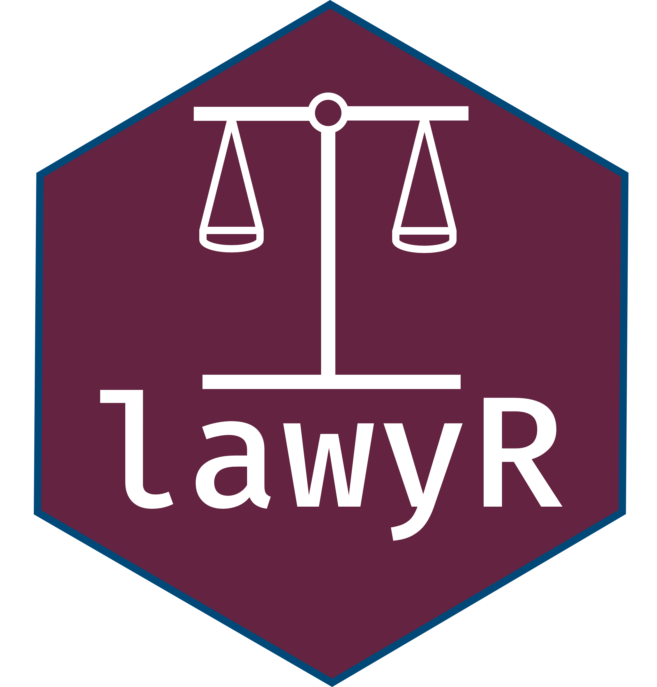
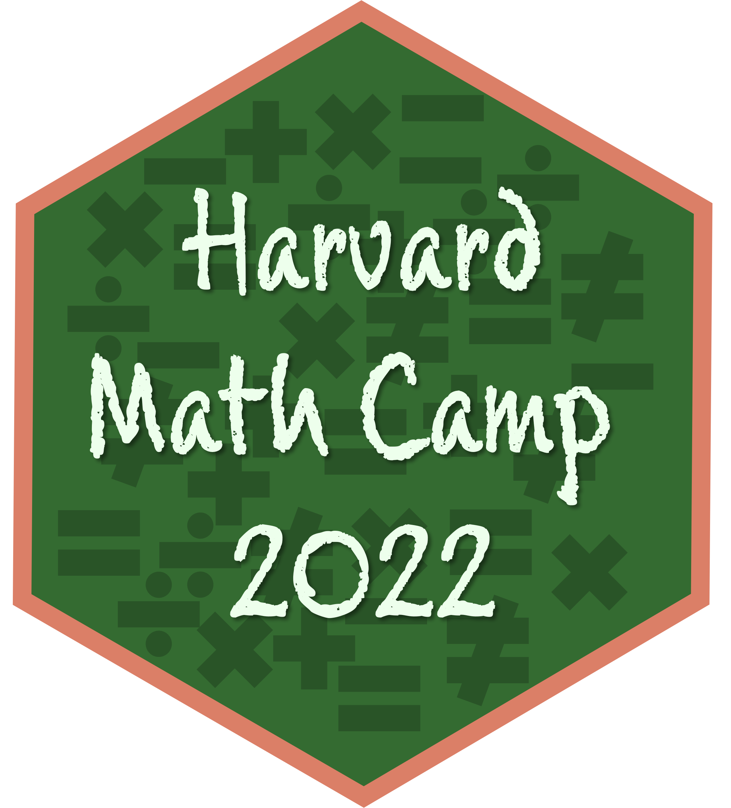

Teaching
Full courses
Gov 97: Drawing Democracies: Redistricting and Elections in America
Harvard College, Spring 2023 and Spring 2024.
Instructor and course designer.
A sophomore tutorial on redistricting and elections designed as an introduction to producing original research. A public copy of my syllabus is available here.
Full Course Description
Federal, state, and local governments are often built from geographic districts. In redistricting, the districts are drawn for a decade at a time. Commissions, legislatures, and courts draw those geographic districts for future elections. The process of redistricting can be done in as little as a few days, but the maps define constituencies for the next decade. We will study the fundamental building blocks of American democracy. Congress is entirely dependent on how its districts are drawn. Who wins when lines are the drawn? Do district-based systems empower or weaken minority communities? How do we distinguish between effects on race and party? Should we protect incumbents when there are different benefits to accountability and experience? Is it better to have non-partisan groups draw the lines? At the end of the day, how can we say if a map is good or bad?
In this course, we’ll explore the many aspects of how districts are drawn in America and their effects on our many geographic democracies. We’ll start by building a baseline understanding of how laws and rules from local, state, and federal entities come together to regulate mapmaking. We’ll explore the ways that we can describe maps quantitatively and qualitatively. We’ll learn from court decisions and recent research into redistricting. All the while, we will draw maps for local, state, and federal districts to better understand the tradeoffs and the high stakes in mapmaking. As new members of the Government department, we will develop your research skills, with an emphasis on how to measure and think about measuring some of the many, often-fuzzy concepts in political science.
Course readings draw on legal authorities, law review articles, expert reports, and empirical political science to explore the field. With a diverse set of readings it is important to realize that redistricting is partisan in many ways. We will engage with writers (and researchers) from the left and right. Disagreement is encouraged, as it is vital to advancement of knowledge, but we will make all efforts to ensure that disagreement is both substantive and polite.Gov 2001: Quantitative Research Methods I
Harvard University and Harvard Extension School, Fall 2021.
Teaching Fellow with Gary King.
A first graduate course in political methodology.
Full Course Description
This is a first graduate course in political methodology, the methodological subfield of the discipline of political science, akin to econometrics within economics, psychometrics within psychology, sociological methodology within sociology, biostatistics within public health and medicine, and dozens of others. These methodological subfields are increasingly interconnected across disciplines and are often known together under broader monikers, such as data science, applied statistics, or computational social science. Political science is an unusually diverse discipline, welcoming of an exceptionally broad array of approaches, substantive questions, theories, and scholars. As such, learning political methodology gives you experience with a broader array of specific methods and a focus on deeper, more unifying perspectives even when originating in many other areas.
The goal of political methodology and this course is to give you the tools necessary to do high quality scholarly research. This involves (1) learning statistical inference, using facts you know to learn about facts you don’t know, so that you feel completely comfortable using these methods in your own scholarship. With this knowledge, you will be able to easily digest articles about new methods invented after this class ends, implement the methods, apply them to your data, interpret the results, and explain them to others. You will also learn (2) how to write and publish novel substantive contributions in scholarly journals. This sounds hard, but almost everyone gets there and numerous graduate and undergraduate students in this class in previous years have published revised versions of their class papers in scholarly journals as their first professional publication. Large numbers of class papers have also turned into books, senior theses, dissertations, and conference presentations, and many have won awards and have been reported in the media.Received the Certificate of Distinction in Teaching from the Derek Bok Center for Teaching and Learning.
Short courses and workshops
lawyR: R Basics for Lawyers

Election Law Clinic at Harvard Law School, Fall 2022.
Instructor.
An 8 week workshop on basics of R for the social sciences, focusing on relevant issues to election lawyers.
Math Prefresher for Political Scientists

Harvard University, Summer 2022.
Instructor.
A PhD-level refresher (often called “math camp”) on math (linear algebra, calculus, and probability theory) and introduction to R for incoming graduate students in the Department of Government.
Full Course Description
Math prefresher (or “math camp”) programs in political science invite newly admitted PhD students to graduate school a week or two before their official start date to attend classes on math, statistics, computer science, and related technical material designed specially for them. At Harvard’s Department of Government, we have welcomed students to the prefresher since 1995. No grades are assigned. No individual attendance records are kept. The program is entirely voluntary, but almost all students usually choose to attend the entire program, regardless of background or interests. A faculty advisor organizes and guides the program and senior graduate students serve as instructors.The Data Science of Redistricting
Harvard College, Spring 2022.
Instructor with Tyler Simko.
An undergraduate workshop on the data science tools used for studying redistricting. Materials for the workshop are available on GitHub.
Full Course Description
Every decade following the US Census, states redraw their district maps for offices up and down the ballot like Congress and state legislatures. This process assigns particular geographic areas to political districts, where candidates then run for office. For example, most of Cambridge is assigned to Massachusetts Congressional Districts #5 (Katherine Clark) and #7 (Ayanna Pressley). Decisions about how to draw these maps are intensely political, as you may have heard about from ongoing lawsuits on racial and partisan “gerrymandering” and “vote dilution” in states like Alabama, New York, Ohio, and Pennsylvania.
What is required when drawing a map? How do we evaluate the “fairness” of a particular map? How can we use data to evaluate these claims? In this workshop, we will cover the data science of redistricting. Starting with a discussion of the legal context and requirements in redistricting, we will think about how to evaluate maps in measurable ways. Along the way, we’ll cover tools for creating maps in R. Then, we will cover creating our own maps using algorithmic “simulation” methods, which create alternative plans according to particular criteria that statutes specify. These techniques are being used in cases across the country right now, and this workshop will provide you with all the background information you need to understand, evaluate, and maybe even contribute your own analyses.